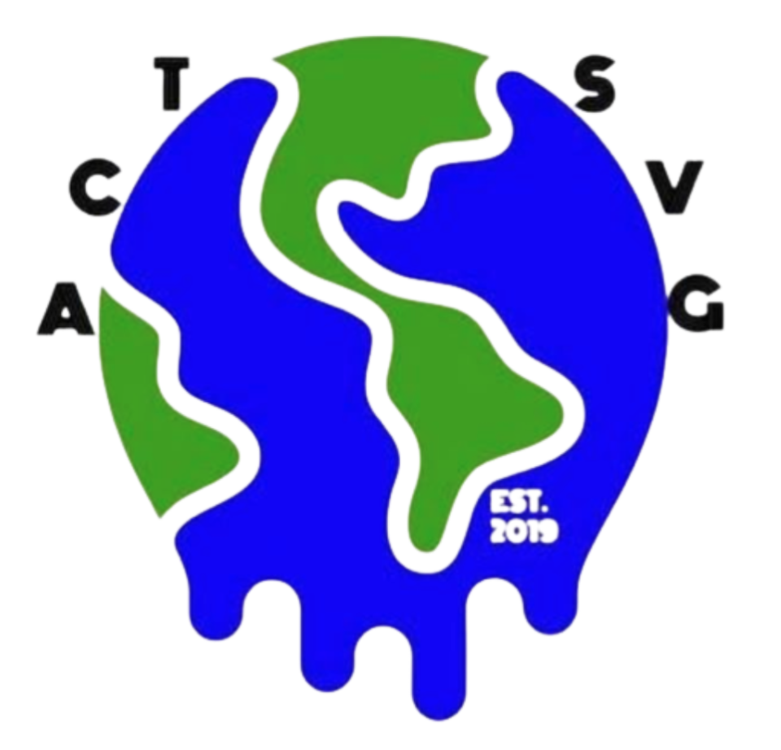

ACT - Climate Change Club
ACT has the long term goal of achieving the Green Flag (Grønt Flagg) as a recognition of our schools sustainability, and environmental consideration. We also hold an art auction and book sale every year in aid of the Sustainable Favela Project in Brazil. As well as this, we have raised funds for a tree project to encourage growth in the local ecosystem and provide tips for high school assembly on ways to be more sustainable and environmentally responsible.
Grades: 9,10,11,12
Time: Tuesday HS Lunch
Location: Room 108
Supervisors: dale.gibneytarleton@isstavanger.no and kyelenik@isstavanger.no
